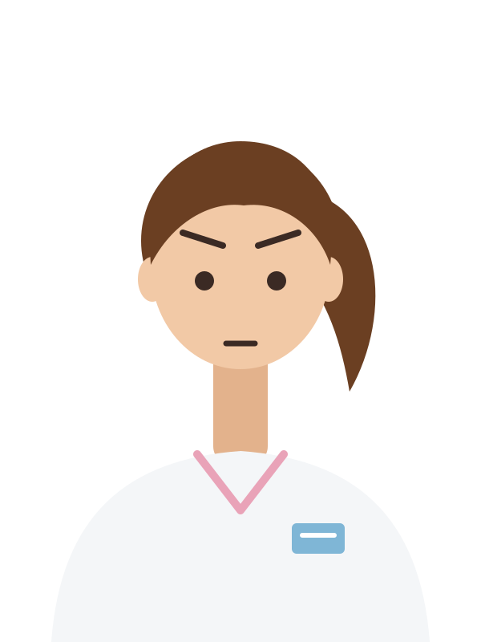

正在蓋病房…

喝口水、坐一下，精力慢慢回來，時間也過得特別快。按 E 起來。
病房 · 值班17:00完成 0 / 9 間病房🪙 金幣 0 / 9
精力45%
尿意62%

照著紅色圓圈的節拍，按 C 或下面的按鈕壓胸。
每分鐘 100–120 下，每下壓深 5–6 公分、再讓胸口完全回彈。
連續壓 30 下，中間不要停。
0 / 30
II · 25 mm/s
看看 P 波、QRS 波、規不規則、快還是慢。


呼叫鈴

護理師
07:30 · 交班
0心電圖一次判讀答對率（%）
夜班護理師的心聲
噹噹噹! 病人怎麼了? · 新進護理師心電圖訓練
夜班，呼叫鈴響了
你是今晚的夜班帶組護理師，手上有 12 床病人：1 間四人房、4 間雙人房。護理站在病房中間，休息室在右邊。呼叫鈴一響，先回護理站接聽，再去床邊：看病人、看心電圖、判讀心律，最後通報醫師。每一間病房有 3 顆心，選錯會扣心；過關時還有心，就能拿到金幣。
- ↑↓←→
- 走路（按住 Shift 用跑的）
- E
- 接呼叫鈴、處理病人、坐沙發喝水休息、上廁所
- 123
- 在床邊選擇要做的事（也可以直接點）
- C
- 病人心跳停了：照節拍按 C（或下面的按鈕）壓胸
- M
- 全景：看整層樓，再按一次回來
- P
- 暫停
選你今晚的樣子：
內容包含病人病危、死亡和心跳停止的情節。本遊戲僅供教學練習，不能取代正式的臨床訓練、院內規範與醫囑；遇到緊急狀況請依院內流程求援。
交班 · 內科病房
今晚，病房交給你了
先看一遍處理流程，準備好再開始。
你
怎麼玩
↑↓←→走路（Shift 跑）
E接呼叫鈴、處理病人
1 2 3床邊選擇
C照節拍壓胸
M全景（看整層樓）
P暫停
值班守則
- 呼叫鈴響了，先回護理站，在呼叫鈴旁按 E 接聽，再去床邊。
- 每一關都有自己的 3 顆心，進新的關卡就重新計算，選錯扣一顆。心用完，這一關就失敗；過關時還有心，就得到一枚金幣。
- 床邊先看病人，再點監視器看心電圖。不用急，慢慢想。
- 記得照顧好自己：累了去休息室的沙發坐下喝水休息，也別憋尿。精力歸零會累倒。
暫停中
時間停住了：呼叫鈴也不會響。
按 P 或 Enter 也可以繼續